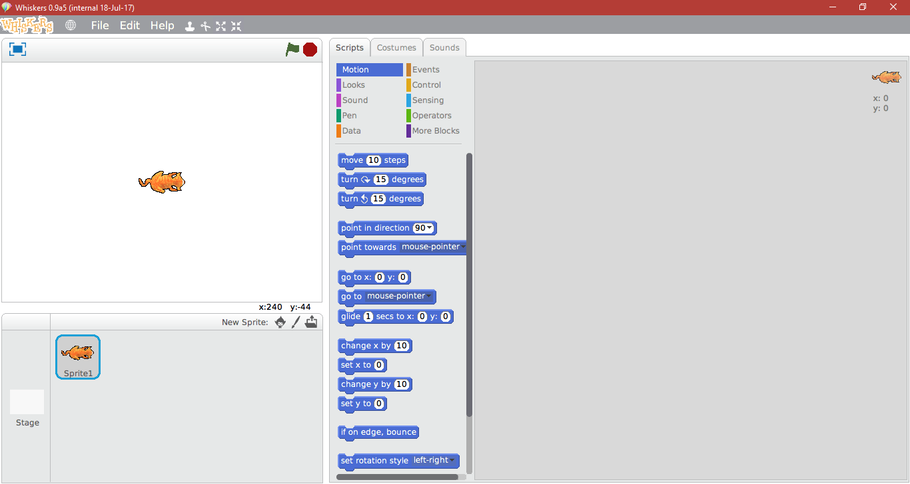

Whiskers: Scratch 2 for Unsupported Devices
Why Whiskers?
Whiskers is designed to be just like Scratch 2. It is easy to use both Scratch and Whiskers.
Whiskers is fast. Whiskers uses NuScractch, which is Scratch 1.4 ported to a modern version of Squeak. The result: a fast, smooth expereince on any computer.
Whiskers doesn't use Flash. Using Squeak over Flash results in more speed, security, and stability.
Whiskers is compatible. Whiskers can run both .sb and .sb2 files.
Want to download a project from the Scratch website?
Whiskers natively runs Scratch projects. This simple web tool allows any Scratch project to be downloaded, with no Flash Player required. Keep working on your projects, no matter what computer you are on.
Click here to download Scratch projects